JRFK Modernization Suite - Deck 1 Blueprint Master
Enforced 1/3 Bullets vs 2/3 Live Screens • Aussie Male William • Pure 64-Bit Trixie • Callsign K7BIT • P, E, P, Enforced
Slide 1: JRFK 32-to-64 Bit Migration & Web Tools
27.84s
Narration: Topic one: thirty-two-bit Raspberry Pi O S is obsolete. Topic two: this leaves R F kit amplifier owners at risk. Topic three: the J R F K thirty-two-bit to sixty-four-bit Migration and J R F K Web Tools enable users to migrate from obsolete systems to current sixty-four-bit Raspberry Pi four or five Debian Trixie. Topic four: J R F K Web Tools run concurrently on any web capable platform with the original R F kit application.
TTS Input: Topic one: thirty-two-bit Raspberry Pi O S is obsolete. Topic two: this leaves R F kit amplifier owners at risk. Topic three: the J R F K thirty-two-bit to sixty-four-bit Migration and J R F K Web Tools enable users to migrate from obsolete systems to current sixty-four-bit Raspberry Pi four or five Debian Trixie. Topic four: J R F K Web Tools run concurrently on any web capable platform with the original R F kit application.
Slide 2: What the JRFK Migrator Does
18.89s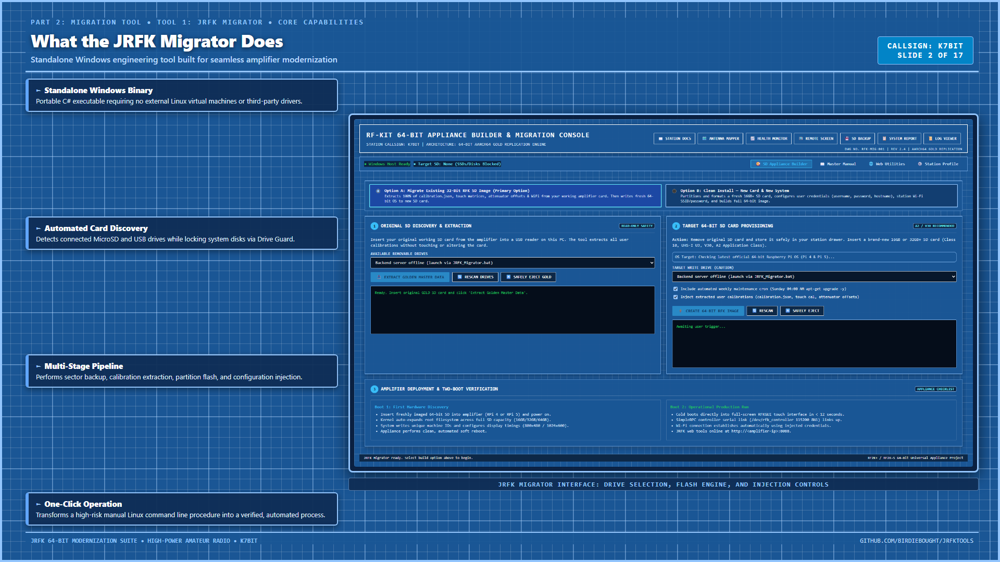
Narration: Now examining the migration tool. The J R F K Migrator is a standalone Windows executable engineered to modernize R F kit amplifiers. It eliminates the need for manual Linux terminal commands by managing the entire disk discovery, backup, imaging, and calibration injection cycle inside a single utility.
TTS Input: Now examining the migration tool. The J R F K Migrator is a standalone Windows executable engineered to modernize R F kit amplifiers. It eliminates the need for manual Linux terminal commands by managing the entire disk discovery, backup, imaging, and calibration injection cycle inside a single utility.
Slide 3: How the Migrator Works
18.26s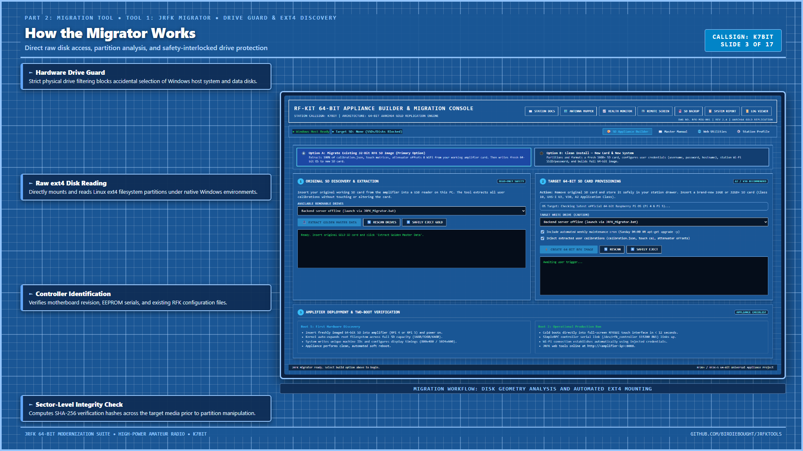
Narration: Looking at how the migrator operates under the hood. The utility integrates Drive Guard protection to prevent accidental selection of your computer hard drives. It directly reads the raw ext4 Linux file structure from your MicroSD card to locate existing controller files and verifies controller hardware before proceeding.
TTS Input: Looking at how the migrator operates under the hood. The utility integrates Drive Guard protection to prevent accidental selection of your computer hard drives. It directly reads the raw ext4 Linux file structure from your MicroSD card to locate existing controller files and verifies controller hardware before proceeding.
Slide 4: Preserving Factory Calibrations
17.90s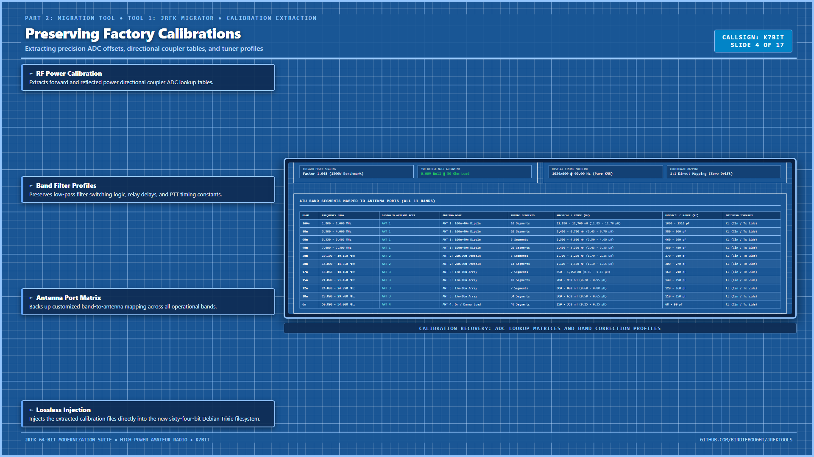
Narration: Preserving amplifier calibration is vital. The migrator automatically locates and extracts the directional coupler forward and reflected power lookup tables, relay timings, and antenna matrix settings. These precise calibration files are preserved and re-injected into the target system with zero data loss.
TTS Input: Preserving amplifier calibration is vital. The migrator automatically locates and extracts the directional coupler forward and reflected power lookup tables, relay timings, and antenna matrix settings. These precise calibration files are preserved and re-injected into the target system with zero data loss.
Slide 5: Flashing 64-Bit Trixie & First-Boot Automation
16.32s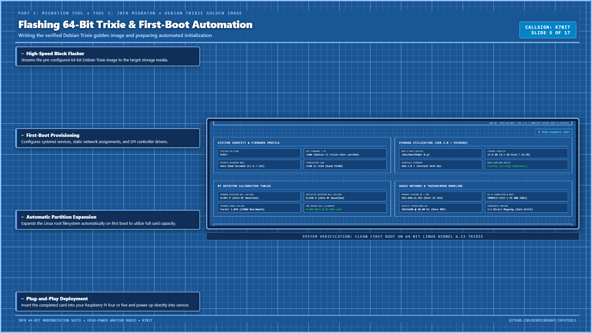
Narration: Completing the migration. The migrator writes the verified sixty-four-bit Debian Trixie golden image to the target card. On initial startup in the amplifier, automated provisioning scripts expand the root partition and configure the background daemons, delivering a plug and play upgrade.
TTS Input: Completing the migration. The migrator writes the verified sixty-four-bit Debian Trixie golden image to the target card. On initial startup in the amplifier, automated provisioning scripts expand the root partition and configure the background daemons, delivering a plug and play upgrade.
Slide 6: Health & Thermal Guard: RF Telemetry
18.70s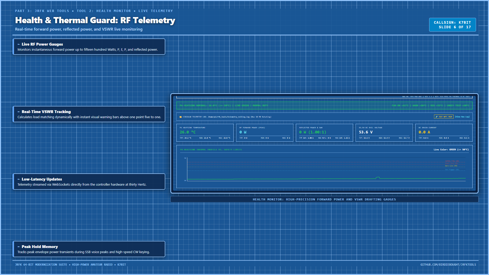
Narration: Examining the first web tool, the Health and Thermal Guard. On screen you see the real-time forward and reflected power instruments. The forward power gauge tracks instantaneous output up to fifteen hundred Watts, P, E, P, while the V S W R calculation updates continuously to safeguard the amplifier.
TTS Input: Examining the first web tool, the Health and Thermal Guard. On screen you see the real-time forward and reflected power instruments. The forward power gauge tracks instantaneous output up to fifteen hundred Watts, P, E, P, while the V S W R calculation updates continuously to safeguard the amplifier.
Slide 7: Health Guard: Rail Current & Thermals
16.54s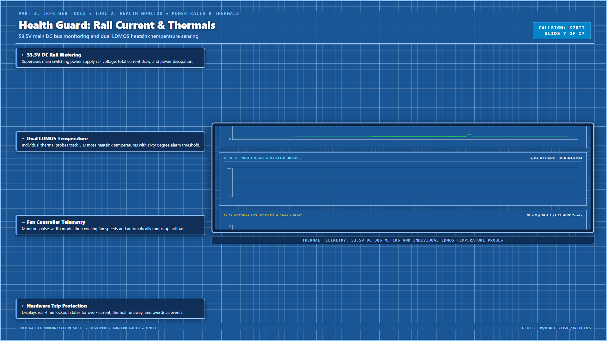
Narration: This view highlights the power supply and thermal supervisory pane. The fifty-three point five volt D C rail meters display voltage and current draw during full power transmission. Down below, dual temperature gauges supervise the L-D moss heatsinks with automatic fan speed tracking.
TTS Input: This view highlights the power supply and thermal supervisory pane. The fifty-three point five volt D C rail meters display voltage and current draw during full power transmission. Down below, dual temperature gauges supervise the L-D moss heatsinks with automatic fan speed tracking.
Slide 8: Health Guard: Protection Interlocks
15.60s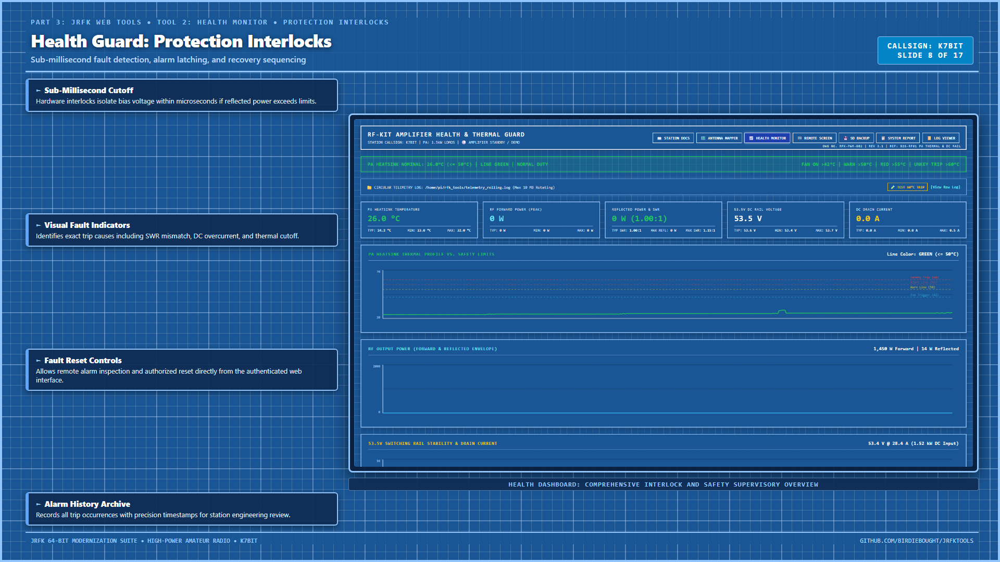
Narration: Shown here is the complete health and protection dashboard. If load mismatch or thermal thresholds are exceeded, the controller hardware disengages bias within microseconds. The web interface clearly identifies the trip cause and allows operator review before resetting.
TTS Input: Shown here is the complete health and protection dashboard. If load mismatch or thermal thresholds are exceeded, the controller hardware disengages bias within microseconds. The web interface clearly identifies the trip cause and allows operator review before resetting.
Slide 9: Health Guard: Full Remote Oversight
13.34s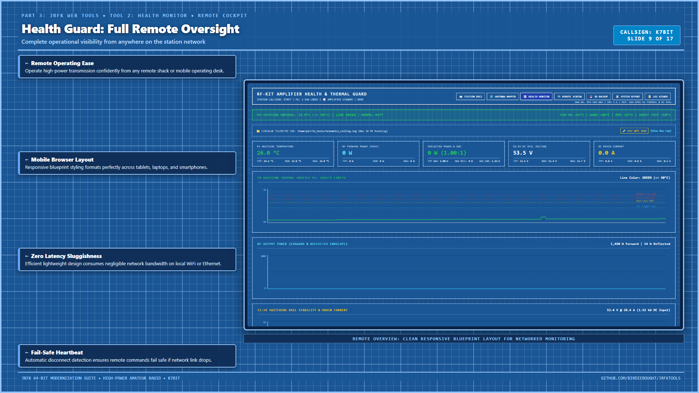
Narration: The complete Health Guard interface provides full remote visibility. Whether operating from the main console or across the home network, you have immediate access to power levels, temperatures, and status flags without sitting in front of the amplifier.
TTS Input: The complete Health Guard interface provides full remote visibility. Whether operating from the main console or across the home network, you have immediate access to power levels, temperatures, and status flags without sitting in front of the amplifier.
Slide 10: Antenna Matrix: 4-Way Routing Grid
14.02s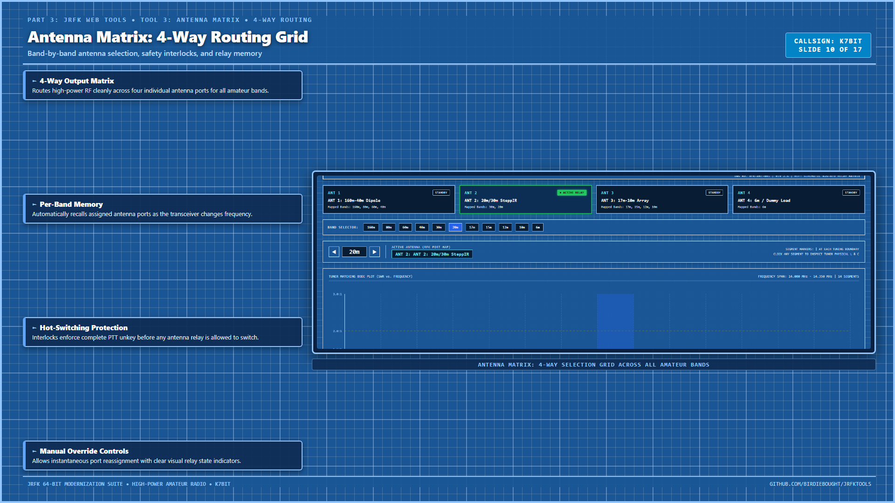
Narration: Moving to the second web tool, the Antenna Matrix and Tuner. The upper panel displays the four-way antenna routing grid. Each amateur band from one sixty through six meters has its assigned antenna port with automatic recall when changing bands.
TTS Input: Moving to the second web tool, the Antenna Matrix and Tuner. The upper panel displays the four-way antenna routing grid. Each amateur band from one sixty through six meters has its assigned antenna port with automatic recall when changing bands.
Slide 11: Antenna Matrix: Tuner Bode Plot
13.61s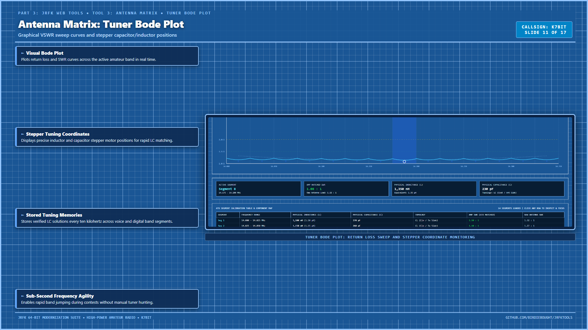
Narration: Examining the lower panel of the antenna tool. Here you see the tuner Bode plot and stepper coordinates. It displays the matched return loss curve across the active band segment alongside exact capacitor and inductor positions for fast recall.
TTS Input: Examining the lower panel of the antenna tool. Here you see the tuner Bode plot and stepper coordinates. It displays the matched return loss curve across the active band segment alongside exact capacitor and inductor positions for fast recall.
Slide 12: Antenna Matrix: Relay Safety Logic
13.22s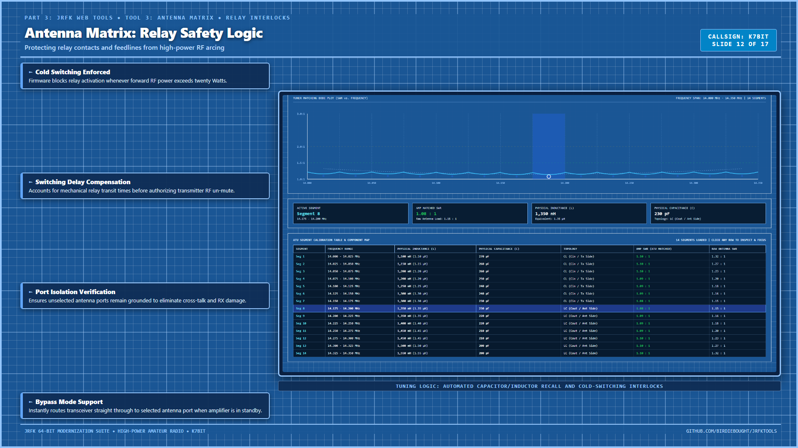
Narration: Safety logic in the antenna matrix prevents high-power RF arcing. The system enforces cold switching by verifying that RF power has ceased before allowing any relay transition, protecting your antenna switches and feedlines.
TTS Input: Safety logic in the antenna matrix prevents high-power R F arcing. The system enforces cold switching by verifying that R F power has ceased before allowing any relay transition, protecting your antenna switches and feedlines.
Slide 13: Antenna Matrix: Consolidated Interface
12.26s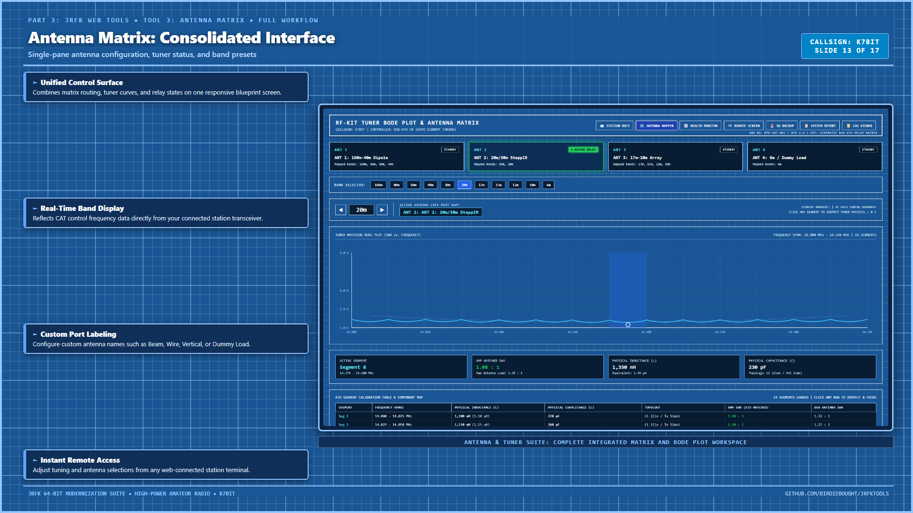
Narration: Here is the full Antenna Matrix interface. It unifies port selection, tuner tracking, and transceiver frequency data onto one clean page, giving you full control of antenna switching from anywhere in the shack.
TTS Input: Here is the full Antenna Matrix interface. It unifies port selection, tuner tracking, and transceiver frequency data onto one clean page, giving you full control of antenna switching from anywhere in the shack.
Slide 14: SD Disaster Recovery & Cloning
16.15s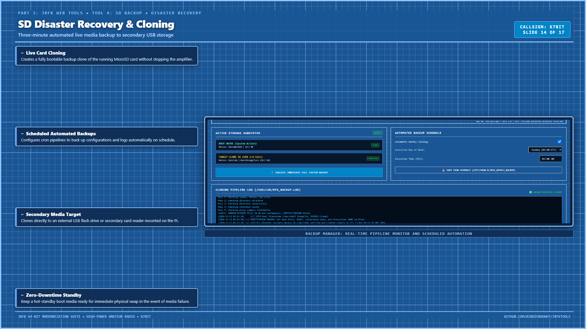
Narration: Looking at the SD Backup and Disaster Recovery tool. This tool creates a live, bootable clone of your operating system card to an external USB drive while the amplifier continues running. If a card ever fails, you have an identical bootable spare ready for immediate use.
TTS Input: Looking at the SD Backup and Disaster Recovery tool. This tool creates a live, bootable clone of your operating system card to an external USB drive while the amplifier continues running. If a card ever fails, you have an identical bootable spare ready for immediate use.
Slide 15: SD Backup: Pipeline Logs & Archives
11.81s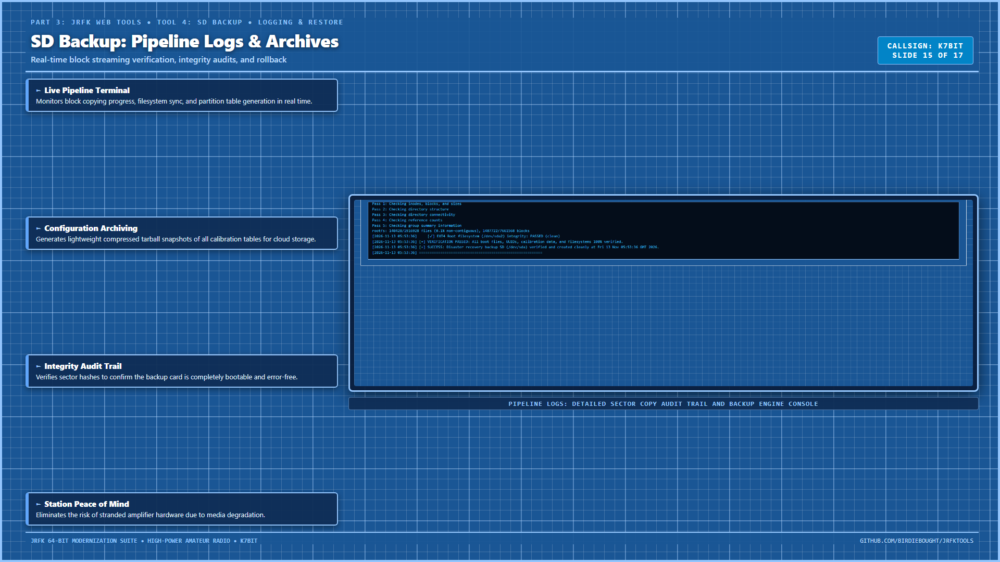
Narration: The lower portion of the backup tool displays the live cloning pipeline log. You can follow sector replication and filesystem checks in real time, guaranteeing that your backup card is verified and ready for deployment.
TTS Input: The lower portion of the backup tool displays the live cloning pipeline log. You can follow sector replication and filesystem checks in real time, guaranteeing that your backup card is verified and ready for deployment.
Slide 16: System Diagnostics & Event Logs
15.53s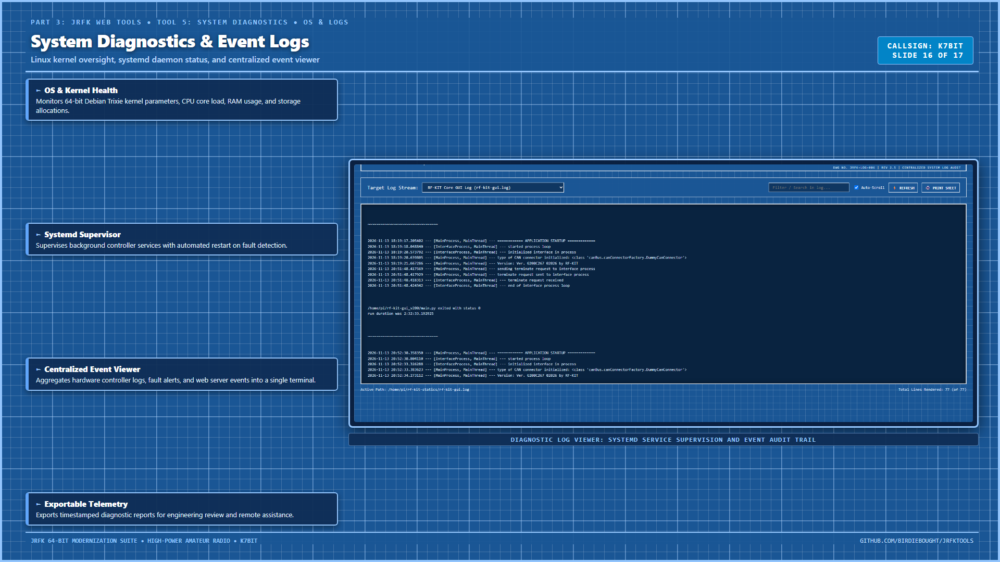
Narration: Next is the System Report and Diagnostic Log Viewer. This screen displays comprehensive Linux kernel metrics, hardware storage allocations, and systemd service health. The real-time log viewer captures all controller events and protection alarms for quick review.
TTS Input: Next is the System Report and Diagnostic Log Viewer. This screen displays comprehensive Linux kernel metrics, hardware storage allocations, and system D service health. The real-time log viewer captures all controller events and protection alarms for quick review.
Slide 17: Station Reference Library & Documentation
18.38s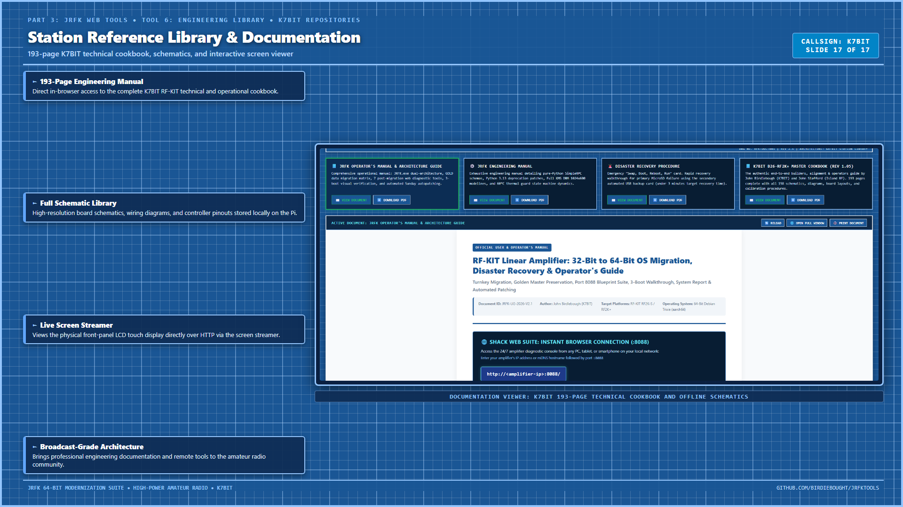
Narration: Concluding our overview with the Documentation Library and Screen Viewer. Operators have direct offline access to the complete one hundred ninety-three page K seven B I T engineering cookbook and full schematic library directly from the amplifier, alongside the live front panel screen streamer. Thank you from K seven B I T.
TTS Input: Concluding our overview with the Documentation Library and Screen Viewer. Operators have direct offline access to the complete one hundred ninety-three page K seven B I T engineering cookbook and full schematic library directly from the amplifier, alongside the live front panel screen streamer. Thank you from K seven B I T.